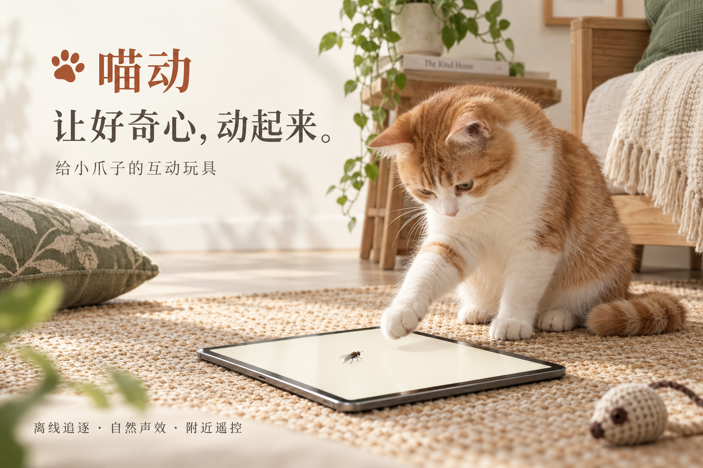

怎么开始？怎么退出？
选择苍蝇，点击「开始追逐」。将设备平稳放置，陪猫咪一起探索。游戏中长按屏幕任意位置 1.5 秒即可返回首页；普通轻点会触发拍中反馈。

适用于 iPhone / iPad，最低支持 iOS / iPadOS 15.0。
选择苍蝇，点击「开始追逐」。将设备平稳放置，陪猫咪一起探索。游戏中长按屏幕任意位置 1.5 秒即可返回首页；普通轻点会触发拍中反馈。
苍蝇免费畅玩，可调整目标数量、速度、大小和声音。小鸟、蟑螂、飞蛾、小鱼、蝴蝶需购买月度会员或永久会员。
中国大陆商店计划售价为 ¥6/月、¥38 永久，正式售价以购买确认页为准。月度会员自动续订；永久会员一次购买、不自动续费。其他地区以当地 App Store 显示为准。
使用购买时的同一 Apple 账户，在应用会员页点击「恢复购买」。取消月度订阅请打开系统「设置 → Apple 账户 → 订阅」。删除应用不会取消订阅，购买永久会员也不会自动取消已有月度订阅。
两台设备安装喵动并开启 Wi-Fi。iPad 点击「让主人来控制」，手机点击「遥控附近设备」，选择猎场并输入 8 位配对码，再在 iPad 上允许连接。配对码 2 分钟内有效。付费玩伴由猎场设备校验会员。
请检查两台设备的本地网络权限，并保持在附近。声音跟随系统静音；检查静音开关、设备音量和应用内「自然声音」设置。建议从较低音量开始。
单机游戏素材离线加载，无需注册账号。附近遥控使用设备间的本地连接；商品价格、购买和恢复购买需要连接 Apple App Store。
请邮件说明设备型号、系统版本、喵动版本、操作步骤和实际现象。可以附上不含隐私的截图；请勿发送密码、验证码或完整支付信息。